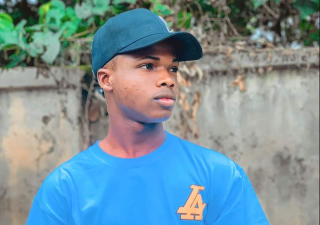
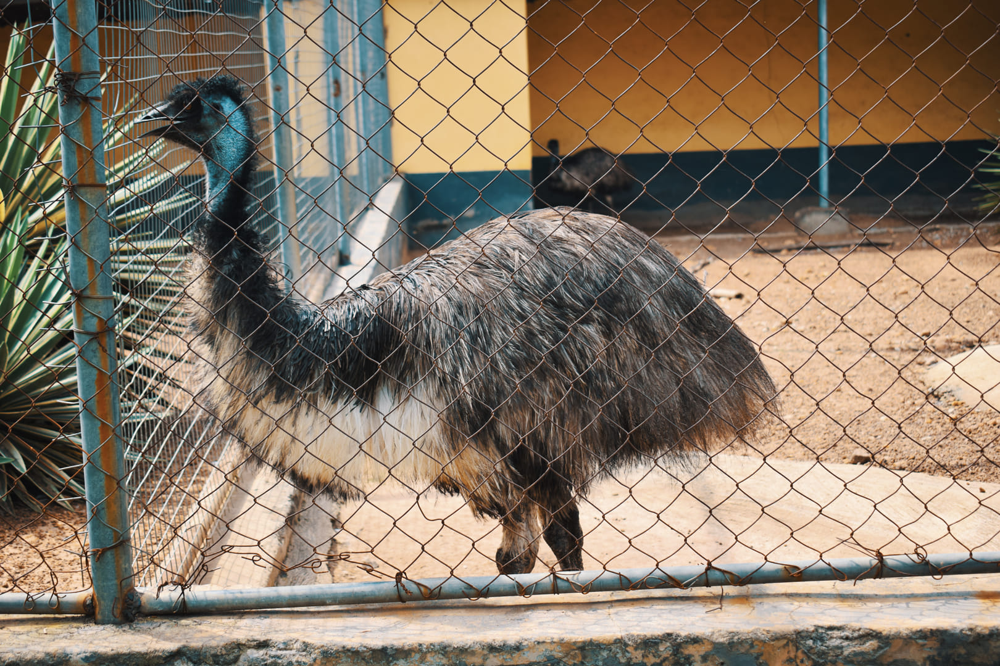
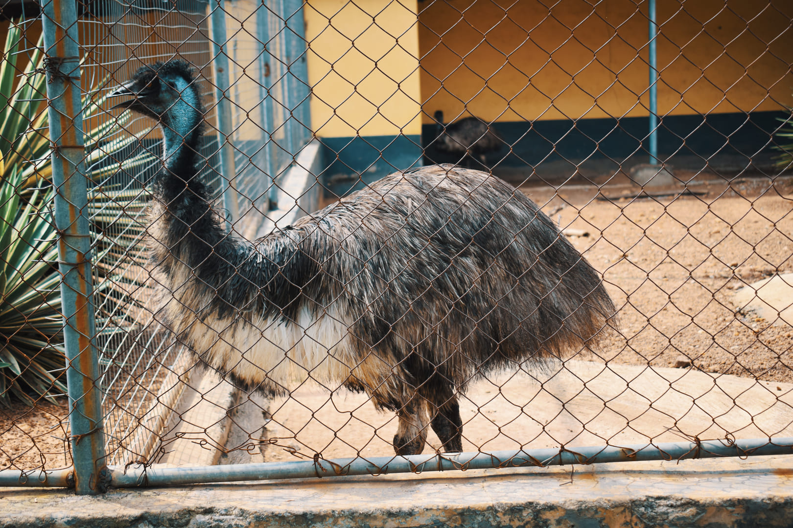
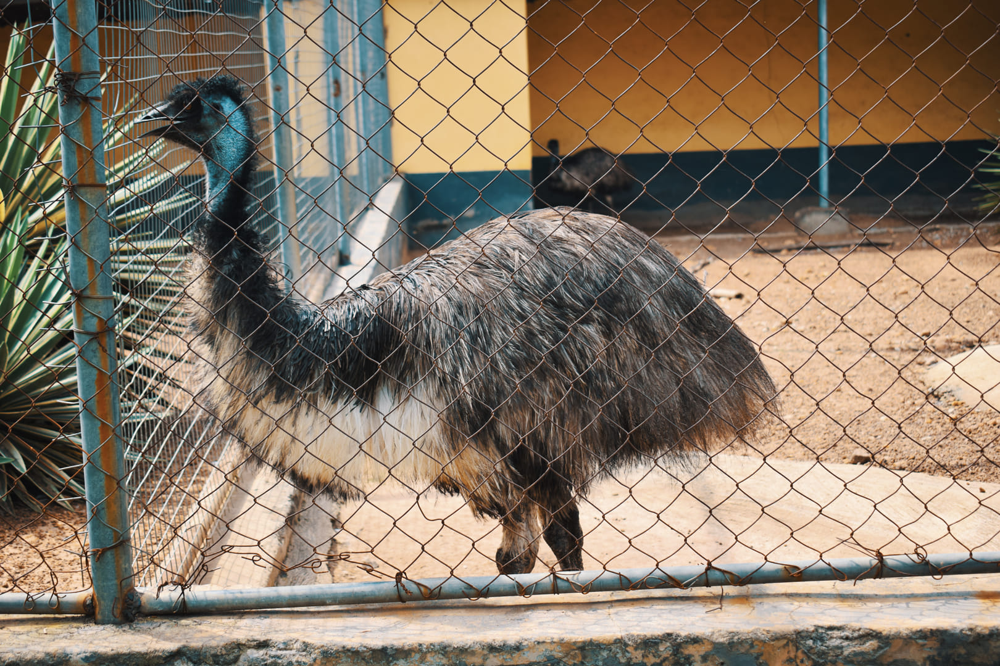
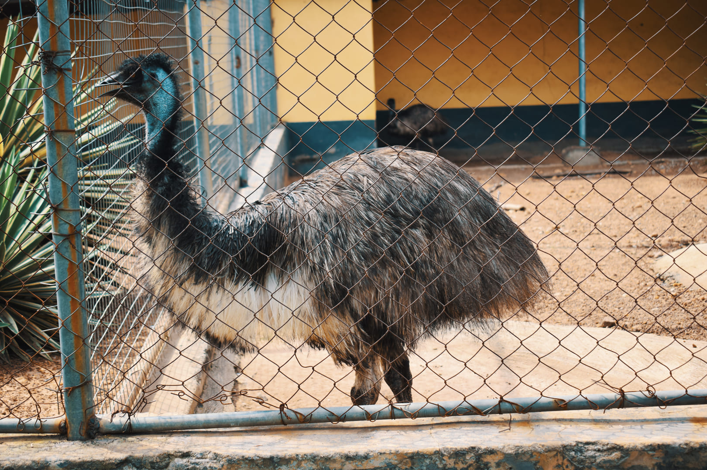

~ GALLERY ~

 


Ever since I was a child, I have been fascinated by the power of photography. Capturing the essence of a moment, the beauty of a landscape, or the emotion of a person, I found myself drawn to the way a photograph can tell a story without words.
As I grew older, my passion for photography deepened. I began to see the world through the lens of a camera, discovering new angles, new perspectives, and new ways to capture the magic of life.
I offer a range of services to capture your special moments. From wedding and event photography to portrait and lifestyle shoots, I have the skills and expertise to create stunning visuals that will become cherished memories. Whether you want to showcase your personality or preserve a milestone event, I take the time to get to know you and your vision. My goal is to provide a personalized experience that exceeds your expectations and reflects your unique style and preferences.
A portrait is more than just a picture; it's a glimpse into who you are. As a portrait photographer, I strive to capture the essence of your personality and style, creating an image that is uniquely yours.
As a maternity photographer, I am honored to capture the magic of this special time in your life. Pregnancy is a journey filled with wonder, anticipation, and love, and I strive to create images that reflect the beauty of this unique experience.
Family is everything, and capturing those moments together is a priceless gift. As a family photographer, I strive to create images that not only document your life, but tell the story of your unique bond.

Outdoor portraits can be stunning, but they can also be challenging. From unpredictable weather to harsh lighting, there are plenty of variables to contend with. But with a little planning and a few tips and tricks, you can create beautiful outdoor portraits that capture the essence of your subject. Here are 5 tips to help you get the most out of your outdoor portrait sessions: Choose the right time of day: The best time for outdoor portraits is during the golden hours, just after sunrise or before sunset.